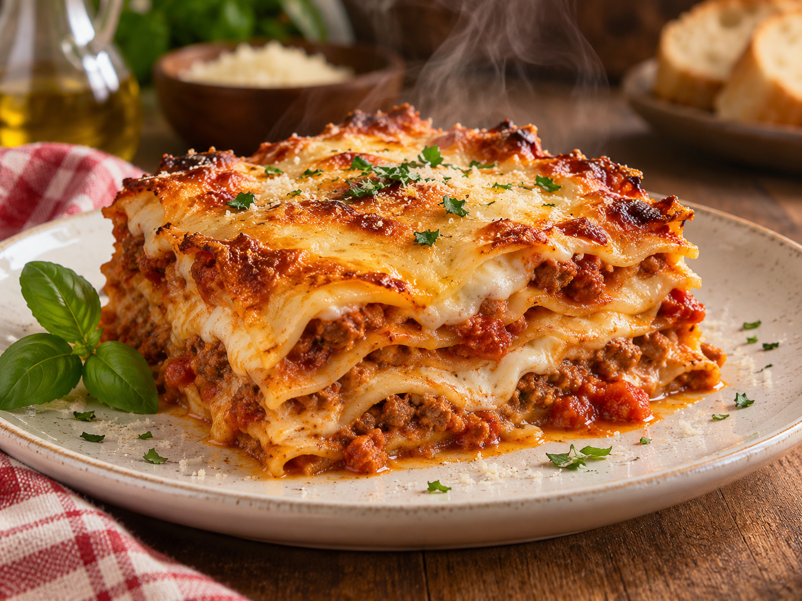

Lasagna

Descrizione
Una lasagna squisita da sbrodoloni maialoni quali siete. Hai fame? Ne hai proprio tanta eh? Brutto porco che non sei altro, ti sei appena scofanato tutti gli snack della macchinetta e ora vuole anche assaggiare la lasagna fatta in casa.
Signori e signore questo è il tipico esemplari di porcus nobilis. Un raro esemplare di porco da ufficio. Ad ogni modo la ricetta è semplice e squisita. La vuoi preparare o no?
Ingredienti:
- Semola di grano duro rimacinata 175 g
- Farina 00 75 g
- Spinaci 125 g
- Uova 1
- Tuorli 2
- Macinato di manzo 700 g
- Passata di pomodoro 350 g
- Pancetta fresca 270 g
- Carote 110 g
- Sedano 110 g
- Cipolle dorate 110 g
- Brodo vegetale 350 g
- Vino rosso 110 g
- Doppio concentrato di pomodoro 2 cucchiai
- Olio extravergine d'oliva 6 cucchiai
- Sale fino q.b.
- Pepe nero q.b.
- Latte intero 800 g
- Burro 50 g
- Farina 00 50 g
- Noce moscata q.b.
- Sale fino q.b.
Procedimento:
- Per preparare le lasagne alla bolognese iniziate dal ragù: mondate e tritate al coltello cipolla 1, sedano 2 e carota 3.
- Tritate anche la pancetta fresca
- In una casseruola antiaderente, o di alluminio o in ghisa smaltata, fate sciogliere la pancetta tritata nell’olio caldo
- Cuocete a fuoco moderato e costante finché non si sarà ben rosolata
- Aggiungete le verdure per il soffritto
- fate appassire il battuto lentamente a calore medio-basso, mescolando spesso (la cipolla non deve assolutamente prendere il sapore di bruciato)
- Alzate la fiamma e unite la carne macinata 8, rimestando sempre accuratamente
- Cuocete per una decina di minuti, deve "sfrigolare" e risultare asciutto
- Sfumate con il vino 11 e lasciatelo evaporare e ritirare completamente, fino a quando non si sentirà più odore di alcol, poi aggiungete il doppio concentrato di pomodoro
- Versate anche la passata di pomodoro 13 e il brodo caldo 14. Proseguite la cottura a fuoco dolce con il coperchio per 2 ore circa
- A metà cottura regolate di sale 16 e di pepe 17. Il ragù dovrà risultare di un bel colore arancione scuro, avvolgente e cremoso
- Mentre il ragù cuoce potete occuparvi della pasta fresca: come prima cosa versate gli spinaci in un tegame 19, aggiungete poca acqua, coprite con un coperchio 20 e cuocete 21 fino a che non saranno appassiti; in totale ci vorranno 5-6 minuti .
- Scolate gli spinaci, lasciateli intiepidire e strizzateli bene 22. Trasferiteli in un mixer e frullateli con l’uovo e i 2 tuorli 23 fino ad ottenere una purea 24 .
- Su una spianatoia versate la semola e la farina 00 25, create un incavo al centro e aggiungete il composto di uova e spinaci 26. Iniziate ad impastare il tutto con una forchetta, incorporando pian piano il composto alla farina 27
- Una volta raccolti gli ingredienti, trasferite l'impasto sulla spianatoia e proseguite lavorando a mano 28. Impastate bene fino ad ottenere un panetto omogeneo 29. Avvolgetelo nella pellicola e lasciate riposare per 30 minuti a temperatura ambiente 30.
Home